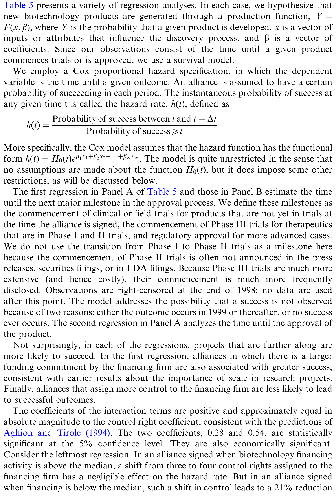
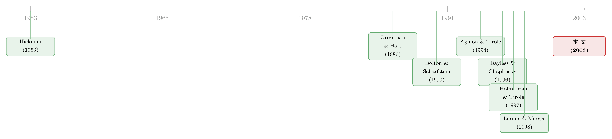

市场一冷，控制权就拱手让人：融资周期如何写进一纸联盟合同
本文读的是 Lerner, Shane & Tsai (2003, Journal of Financial Economics)：当公开股权市场「关门」时，小生物技术公司被迫转向与大药企的联盟来融资；而恰恰是在这些「寒冬」里签下的合同，更可能把关键控制权交给出资的大公司、更不容易成功，并且一旦日后市场回暖，就会被「不成比例地」重新谈判。换句话说，股权融资的冷热不只是「谁在什么时候发股」的择时问题，它会一路渗透到组织结构和创新成败里。
1 引言：冷热市场，只是「时机」问题吗？
股权发行会扎堆在「热市场」(hot issue market)，这件事金融学界从 Hickman (1953) 起就反复记录。理论家们也早就猜测：外部融资的可得性，是塑造组织结构和管理者行为的重要力量。
可问题在于——这大多停留在「猜测」。我们熟悉的一整套文献，关心的是融资条件如何影响发行时机：什么时候发股最划算、价格反应在热市场里为何没那么难看。但融资活动的潮起潮落，究竟有没有改变资源真正流向了谁、流过去之后那些项目成没成功？这一步，实证上几乎是空白。
Lerner、Shane 和 Tsai 这篇文章，迈出的就是这一步。而他们聪明的地方，不是去横扫各行各业，而是死死盯住一个舞台：小生物技术公司与大公司之间的技术联盟。
为什么是这个舞台？作者给了三条理由，而这三条理由本身就构成了全文的「地基」，我们后面会专门讲。先把核心张力摆出来：
一家小生物技术公司，手里攥着一个有前途的化合物，却没钱把它做下去。它有两条路——要么去公开市场发股自己烧钱，要么找一家大药企结盟、让对方出钱。如果此刻公开市场恰好「关门」了呢？
直觉上你会说：那就去结盟呗，反正钱到手就行。但这篇论文要告诉你的是：此时此刻签下的那张合同，会和「市场温暖时签的合同」长得很不一样——它更可能把项目的方向盘交到出资方手里。而这一念之差，会一直延续到几年后这个药能不能做成。
2 绕不开的那个理论：谈判力，是被融资市场「定」出来的
要理解这套逻辑，得先回到不完全契约 (incomplete contracts) 的传统。Grossman & Hart (1986) 和 Hart & Moore (1988) 奠定的思路是：因为未来的种种或然状态无法在合同里写尽、也无法在法庭上验证，所以所有权（控制权）应当交给「边际上最能影响产出」的那一方——这一方拿到了拍板权和剩余索取权，才有动力把项目做到最好。
接着，一个自然的问题是：把这套框架套到一个「研发方 + 出资方」的联盟上，会发生什么？这正是 Aghion & Tirole (1994) 做的事。在他们的设定里，研发方（小公司）自己没钱、借不到钱、也无法独立把产品商业化，于是只能转向一个「客户」（大公司）来出资。项目成功的概率，是研发方努力与出资方资源的函数——且是递增、但边际递减的。
把这句话形式化，就是下面这个最核心的设定（注意：论文是用文字描述的，这里只是忠实地把它写成符号）：
然后，关键的一步来了。Aghion & Tirole 讨论了两种极端：
- 研发方握有事前谈判力时：所有权会被有效率地配置。若研发方努力的边际影响更大，控制权归研发方；若不是，研发方就把控制权「卖」给出资方、换一笔现金。这和 Grossman-Hart 的结论一致。
- 出资方握有谈判力时：反转出现了。如果从最大化创新的角度看，本该把控制权交给研发方——可现实是，囊中羞涩的研发方拿不出钱来补偿出资方，于是出资方顺势把控制权留在自己手里。一个低效率的所有权配置就此发生。
Aghion & Tirole 本身没有明写公开市场的角色，但这篇论文补上了那条暗线：公开股权市场的冷暖，恰恰决定了研发方的谈判力。市场温暖时，小公司既能发股、也能结盟，进退有据；市场寒冷时，它几乎只剩结盟一条路，谈判力被大幅削弱。
这条逻辑还能从两个相邻模型里得到加固。Holmstrom & Tirole (1997) 说，一个负向冲击会同时收紧公开投资者和中介的资金供给，更多公司被迫转向「既给钱、也要监督」的中介，而中介会索要更苛刻的条件；Aghion & Bolton (1992) 则证明，当创业者能抵押给投资者的收入不足时，往往只能靠让渡一项控制权（比如终止项目的权利）来换取融资——哪怕这会压低项目本身的净现值。两篇文章都指向同一个结论：控制权向出资方转移，与公开市场的恶化紧紧绑在一起。
论文用 Fig. 1 把这件事画了出来：在有利的融资市场里，双方能触及的合同集合很大，可以把大部分控制权配给研发方（图中的 A 点）；在不利市场里，可行合同的范围被压缩，双方只能落在一个不最大化项目价值的 B 点。更妙的是它的边际含义——在强市场里，多给出资方一项控制权几乎不影响价值（因为本就配置得当）；而在弱市场里，这一挪可能让价值显著下跌。
3 为什么偏偏是生物技术？
理论讲完，回到那三条「为什么是这个舞台」的理由——它们其实是这篇实证设计能成立的全部前提。
第一，理论对这个行业有明确预言。 Aghion-Tirole 的故事最贴合的，正是「研发方没钱、转向出资方」的生物技术联盟。
第二，这个行业的股权融资经历了剧烈的周期性波动，而且这些波动多半是「行业级冲击」。 在研究的年份里，获批的生物技术药寥寥无几，于是单家公司的坏消息——比如一个有希望的候选药被否——会戏剧性地冲击所有公司的融资能力。论文举的例子很生动：1993 年 1 月 Centocor 宣布其旗舰产品 Centoxin 的临床试验终止，几乎所有生物技术公司的股价和融资活动都应声下跌；叠加同期对克林顿医改方案的担忧，1992–1994 年整个行业的融资陷入低谷。结果就是，从公开市场募到的资金高度不稳定（见 Fig. 2）。这一点至关重要：它意味着融资环境更接近一个外生的行业冲击，而非某家公司基本面的内生反映。
「行业级、而非公司级」的融资冲击，是这篇论文识别策略的命门。正因为坏消息会无差别地砸向所有同行，作者才能把「市场冷热」近似当作一个不被单个项目质量驱动的外生变量。
第三，生物技术项目信息极其透明。 生物工程化合物要走一套严格而留痕的监管审批，联盟合同因为是重要融资来源也几乎都会公开备案，其它关键因素也能被识别和控制。这给了研究者一个少见的、能把合同条款一条条读出来的样本。
那么，「控制权」具体指什么？作者和业界人士谈下来，锁定了五项关键控制权：(1) 临床试验的管理权；(2) 初始生产工艺的控制权；(3) 产品获批后的生产控制权；(4) 出资方保留全部销售类别的权利；(5) 把研发方排除在全部营销环节之外的权利。论文的主体分析，就是数一数这五项里有几项被划给了出资方。
这里有个值得称道的稳健性细节：这五项权利是不是「捆绑出现」的？如果总是一揽子给或一揽子不给，那把它们加总就没意义了。作者报告，五项关键控制权之间的平均相关系数只有 0.026；在 300 对组合里，只有 10 对存在「一项出现时另一项至少三分之二时间也出现」的强共现。所以，把控制权当作一个近似连续、可加总的变量，是站得住的。
（顺带一提，出资方在这些交易里购买的股权其实很小——在 Recombinant Capital 数据库里披露了股权购买的交易中，平均持股仅 9%，均值金额约 $7.6 million，相对非股权支付微不足道。所以股权并未被算作一项「关键控制权」，它更像是出于会计上可分摊摊销的考虑。）
4 识别策略与数据
把上面的故事翻译成可检验的命题，作者问了四个由理论自然引出的问题：
- 是否在某些时期，研发方几乎无法靠发股融资，于是转向联盟融资？
- 在「外部股权融资稀缺」时期签的合同，控制权配置是否不同（更偏向出资方）？
- 这些合同是否更不成功？而且这种「更不成功」是否在弱融资市场里更明显——正如 Aghion-Tirole 所预言？
- 一旦日后融资条件改善，那些把控制权交给出资方的合同，是否会被不成比例地重新谈判？
数据上，主分析用的是 1980–1995 年间 200 份生物技术公司的联盟合同；融资选择那一节另用了一个 49 家生物技术公司的面板。融资环境的度量，来自 Fig. 2 那条「每家在业公司平均募资额」的序列。补充分析里，作者还把控制权扩展到一组在 5%–95% 合同中出现的 25 项权利。
作者也很坦诚地交代了模型与现实的落差，并逐一打了补丁：真实合同动辄上百页、远比「单一不可分所有权」复杂（于是用五项权利的加总来近似）；同一对公司常常反复结盟、积累信任（于是控制「是否存在既往合作关系」）；有些联盟发生在两家生物技术公司之间、双方都缺钱（于是识别出带「横向」色彩的联盟，并在剔除后重做分析）。
值得提醒的是，论文自己承认：第一问（融资选择）那一组面板回归虽然统计上显著，经济显著性却并不亮眼。真正有分量的，是后面关于控制权、成败与续约的证据。
5 主要结果：从控制权，到成败，再到续约
把四个问题的答案串起来，是一条完整的因果链。
控制权。 在公开股权融资充裕的时期，合同更可能把关键控制权留给研发方；而这一格局，在控制了「联盟所涉技术质量」的变量之后依然成立——也就是说，不是因为冷市场里恰好都是烂技术，而是融资环境本身在挪动控制权的天平。这与理论的预言方向一致。
成败。 把控制权大头交给研发方的联盟，更容易成功；而且这种「研发方掌舵更成功」的效应，在弱融资市场里更为显著——恰如 Aghion & Tirole (1994) 所料。这正是最关键的一环：它说明寒冬里那种「控制权拱手让人」的配置，不只是分配问题，而是真的损害了创新产出。
续约（这是全文的「证物」）。 如果某个联盟本该把控制权交给小公司、却因为当时的融资困境被迫交给了出资方，那么一旦融资条件改善、小公司谈判力恢复，我们就该看到一个清晰的模式：那些把控制权大头给了出资方的合同，会被不成比例地重新谈判。 实证结果与这一模式一致。

Table 5: presents a variety of regression analyses. In each case, we hypothesize that
为什么续约证据如此有力？因为它直接呼应了「低效率」这个词。如果寒冬里的配置本来就是最优的，市场回暖没理由专挑这类合同来改；偏偏是这类合同被系统性地重谈，恰恰反过来证明了它们当初是被融资约束「逼」出来的次优结果。这是把「融资周期有真实代价」这件事钉死的最后一颗钉子。
（关于「资本市场冷暖如何渗进一家初创公司的价值」，可参见《资本市场的冷暖，是怎样写进一家初创公司估值里的》；关于联盟伙伴之间的相互牵连，亦可参见《你的合伙人破产了，你会不会跟着一起垮？》。）
6 文献脉络
这篇论文坐在两条河流的交汇处。
一条河是融资可得性的真实效应。从 Hickman (1953) 记录「热市场」扎堆发行开始，到后来一支文献关心信息不对称如何驱动股权发行的时机——Bayless & Chaplinsky (1996) 发现高发行量时期的价格反应没那么难看，并把它归因于信息不对称的缓解。但这一支大多停在「时机」与「价格反应」，很少追问对真实绩效的影响。
另一条河是不完全契约与组织结构。Grossman & Hart (1986)、Hart & Moore (1988) 给出所有权配置的基本逻辑；Bolton & Scharfstein (1990) 指出缺乏「深口袋」的年轻公司会因掠夺担忧而被扭曲；Aghion & Bolton (1992) 把控制权让渡写进融资合同；而 Aghion & Tirole (1994) 把这套思路精确地落到了 R&D 联盟上；Holmstrom & Tirole (1997) 则补上了「冲击同时收紧公私两类资金」的宏观链条。在更早一步的实证上，Lerner & Merges (1998) 已经用生物技术联盟的合同数据描绘过控制权的配置。
这篇 2003 年的论文，正是把两条河接到了一起：用一个信息透明、融资冲击近乎外生的行业，去检验「融资周期是否通过控制权配置，真实地改变了创新的成败」。

评论与延伸（Q&A + 研究方向）
(a) 几个可能的疑问
Q：这和经典的「市场择时」(market timing) 到底有什么不一样？
择时文献问的是「公司什么时候发股最划算」，落点在发行决策和价格反应。这篇论文问的是更深一层的事：融资环境的冷热，会不会改变资源最终落到谁手里、以及落过去之后项目成不成功。前者是关于时机，后者是关于真实效应与组织结构——这正是它的增量贡献。
Q：融资环境真是外生的吗？会不会只是「烂项目恰好在烂市场签约」？
这是最该担心的内生性。论文的两道防线：其一，生物技术的融资冲击多为行业级（一家坏消息拖垮所有同行的融资），更接近外生；其二，在控制权回归里控制了技术质量，结果依然成立。但要彻底排除「弱市场里项目组成不同」，仍不容易——这是识别上的软肋。
Q：为什么「续约」被当成最关键的证据？
因为它直接区分了「最优」与「次优」。如果寒冬里的控制权配置本就最优，市场回暖没理由专门重谈这一类合同；偏偏是「控制权给了出资方」的合同被系统性地重新谈判，反过来证明它们当初是被融资约束逼出来的低效率安排。这是把因果链闭合的一环。
Q：把「控制权」当成一个可加总的连续变量，会不会太粗糙？
作者用数据回应了：五项关键控制权之间的平均相关系数仅
0.026，几乎不「捆绑」出现。所以加总成一个指数是合理的近似，而非人为制造的结构。
Q：第一问的回归不是说「经济显著性不亮眼」吗，那结论还可信吗？
那一句坦白针对的是「融资选择」面板（公司在冷市场里是否更多用联盟融资）。论文真正的分量在后三问——控制权、成败、续约——这几块的证据方向一致、互相印证，构成了主结论。把弱的那块如实标出来，反而增强了可信度。
Q：结论能外推到生物技术之外吗？
作者自己承认，盯住单一行业牺牲了普适性。但换来的是干净的识别。能不能推广到其它「信息不对称重、融资周期猛」的领域（如早期科技、清洁能源），需要新的样本去验证——这恰恰是后续研究的空间。
(b) 几个可能的研究问题与提案
1. 把「融资周期 → 控制权」搬到公司债与信贷市场。 【经济故事】当公开债券市场骤然冻结（如 2008、2020 年 3 月），企业被迫转向银行贷款或私募信贷——这正是「股权关门、转向中介」逻辑在债务侧的镜像。预测是：寒冬里签的贷款合同 covenant 更严苛、控制权（如加速到期、董事会席位）更偏向债权人，且在市场回暖后被不成比例地重新谈判。 【可行性】高。Dealscan 的贷款条款 + 债券市场流动性指标（可借鉴《差点死掉的那个市场：一场公司债流动性危机的微观解剖》的危机度量）即可构建。识别上可用 COVID 冲击作为近外生的「市场关门」事件。
2. 外资退潮时，本地企业的融资条款如何被改写。 【经济故事】当一国债券市场在 risk-off 或资本管制下对外资关闭，本地企业的「外部融资可得性」骤降、谈判力下降，转向本地银行或战略投资者时，控制权/条款是否更苛刻？这是把本文的机制嫁接到外资持有人这条线上。 【可行性】中。需要跨国的企业融资条款数据与外资持有/可投资度指标，识别依赖某些国家突发的资本流动管制作为冲击；条款数据的可得性是主要约束。
3. 用文本/机器学习重新度量「联盟成败」与控制权强度。 【经济故事】本文受限于手工编码的五项权利和较粗的成败指标。今天可以用 NLP 把上百页合同里的控制权条款逐条量化，并用更细的研发里程碑（临床进展、获批）度量成败，从而更精确地估计「弱市场配置」的价值损失。 【可行性】中。合同文本与临床数据（如 ClinicalTrials.gov、药品审批数据库）可得；难点在于把控制权强度做成可信、可比的连续度量。
4. 现代生物技术 IPO 窗口与 SPAC 热潮下的重检。 【经济故事】2020–2021 年生物技术 IPO/SPAC 极度火热、随后骤冷，提供了又一轮近乎外生的融资周期。可检验：热潮中独立上市的公司 vs. 冷却后被迫结盟/被并购的公司，其后续研发成败与控制权安排是否复刻本文模式。 【可行性】中。IPO/SPAC、联盟与并购数据可得；样本期短、且需小心 2020–2022 的多重宏观冲击混杂。
评述者的判断
这篇论文的贡献，在我看来不在于某一个惊人的系数，而在于它把一个长期停留在「猜测」层面的命题做成了可检验、且证据链完整的实证：融资周期不只是择时游戏，它会通过控制权配置，真实地改变创新的成败。尤其是「续约」那一环的设计——用市场回暖后的重新谈判，反推当初配置的低效率——堪称巧妙，是把因果叙事闭合的点睛之笔。
但识别上的担忧也要诚实说出来。其一，「融资环境外生」的假设虽然有行业级冲击撑腰，却无法完全排除「弱市场里项目质量构成本就不同」这一替代解释，控制技术质量只是缓解、不是根除。其二，成败与续约的度量较粗，且样本止于 1995 年、规模不大，统计功效有限——作者本人也对第一问的经济显著性保持了克制。其三，「联盟」这一选择本身是内生的：我们只看到了那些谈成了的合同，那些因条件太差而压根没签成的项目，是看不见的样本截断。
我最想看到的后续，是把这套「市场关门 → 谈判力下降 → 控制权易主 → 真实代价」的逻辑，搬到一个样本更大、冲击更干净的场景里去——公司债与信贷市场在 2008 与 2020 的两次骤冷，正是现成的实验台。如果在那里也能看到「寒冬里的苛刻条款，在回暖后被系统性重谈」，那么这篇二十年前的生物技术论文所讲的故事，就远不止于生物技术了。
参考文献
- Aghion, P., Bolton, P. (1992). An incomplete contract approach to financial contracting. Review of Economic Studies 59, 473–494.
- Aghion, P., Tirole, J. (1994). On the management of innovation. Quarterly Journal of Economics 109, 1185–1207.
- Bayless, M., Chaplinsky, S. (1996). Is there a window of opportunity for seasoned equity issuance? Journal of Finance 51, 253–278.
- Bolton, P., Scharfstein, D.S. (1990). A theory of predation based on agency problems in financial contracting. American Economic Review 80, 93–106.
- Grossman, S.J., Hart, O.D. (1986). The costs and benefits of ownership: a theory of lateral and vertical integration. Journal of Political Economy 94, 691–719.
- Hart, O.D., Moore, J. (1988). Incomplete contracts and renegotiation. Econometrica 56, 755–785.
- Hickman, W.B. (1953). The Volume of Corporate Bond Financing Since 1900. Princeton University Press for the NBER, Princeton.
- Holmstrom, B., Tirole, J. (1997). Financial intermediation, loanable funds, and the real sector. Quarterly Journal of Economics 112, 663–691.
- Lerner, J., Merges, R.P. (1998). The control of technology alliances: an empirical analysis of the biotechnology industry. Journal of Industrial Economics 46, 125–156.
- Lerner, J., Shane, H., Tsai, A. (2003). Do equity financing cycles matter? Evidence from biotechnology alliances. Journal of Financial Economics 67(3), 411–446.